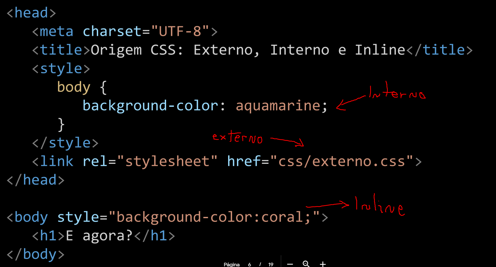

CSS (Cascading Style Sheet)
- Usado para estilizar elementos escritos
em uma linguagem de marcação
como HTML.
- Separa o conteúdo da representação
visual do site.
CSS Interno, Externo e Inline

DESAFIO!!! abra o inspecionar e importe esse CSS externo http://localhost:3333/style.css, e veja as mudanças visuais que acontece.
Seletores CSS
Os seletores CSS são usados para "encontrar" (ou selecionar) os elementos HTML que você deseja estilizar.
Podemos dividir os seletores CSS em cinco categorias: